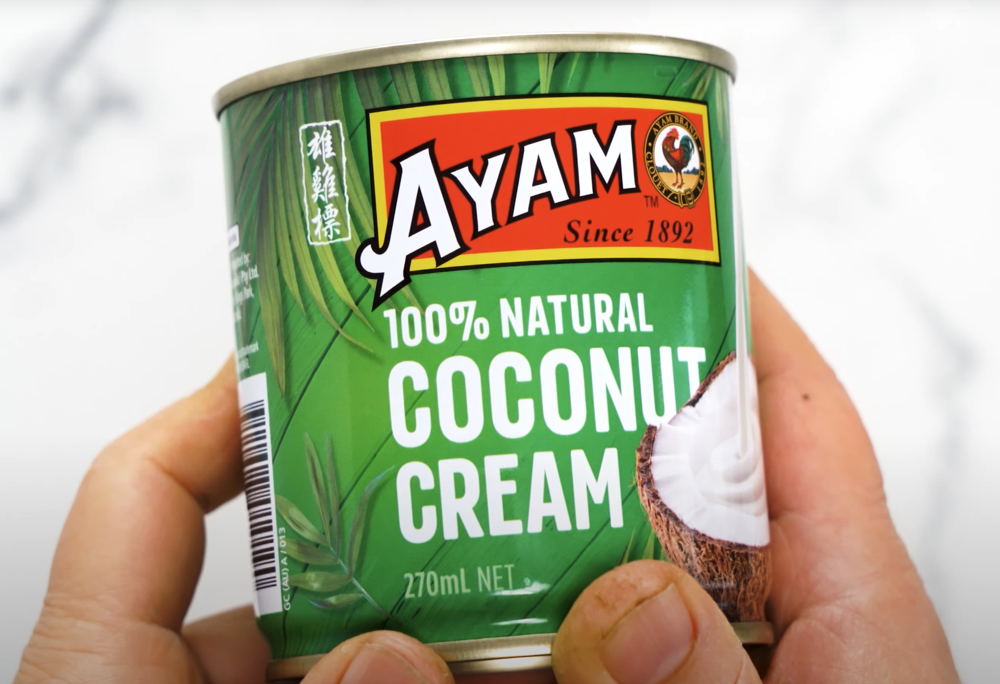

This salad features super-fresh flavours and great textures, perfect for when you are a bit over hearty meats and want something light yet fulfilling. The combination of plump prawns, sweet apple, crunch cabbage and vibrant herbs all combed with the richness of a lime coconut dressing is amazing.
Originally this recipe was sourced from the great woman Recipetineats who has quite a wealth of good recipes to follow. I've imported this recipe into this page as the link only has a how-to video guide, no actual recipe. This is because this recipe is a cookbook exclusive recipe but I don't gatekeep so I've translated the video into the recipe below.
Link to the original post and video is here
